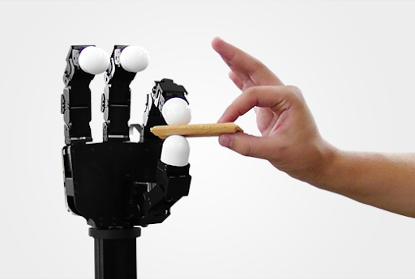
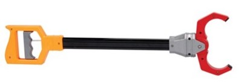

Let's get you a robot
In this chapter we're going to outfit your mech. I want to make sure you understand the robot hardware that we've selected for these notes, and how it compares to the other hardware available today. You should also come away with an understanding of how we simulate the robot and what commands you can send to the robot interface.
Although we are going to focus on one particular set of hardware for these notes, one of the great things about modern robotics is that many of the tools we will develop over the course of these notes are quite general, and can be transferred from one robot to another easily. I could imagine a future version of these notes where you really do get to build out your robot in this chapter, and use your customized robot for the remaining chapters!
Arms
There appear to be a lot of robotics arms available on the market. So how does one choose? Cost, reliability, usability, payload, range of motion, ...; there are many important considerations. And the choices we might make for a research lab might be very different than the choices we might make as a startup.
Robot arms
I've put together a simple example to let you explore some of the various robot arms that are popular today.
This is made possible by the proliferation of some common file formats for describing our robots. Unfortunately, the field has not converged on a single preferred format (yet), and each of them have their quirks. Drake currently loads Universal Robot Description Format (URDF) and Simulation Description Format (SDF); the Drake developers have been trying to upstream improvements to SDF rather than start yet another format.
Let me know if your favorite arm isn't on the list yet!

There is one particular requirement which, if we want our robot to meet, quickly winnows the field to only a few viable platforms: that requirement is joint-torque sensing and control. It's not absolutely clear that this feature is required, even for very advanced applications, but as a researcher who cares a great deal about the contact interactions between my robots and the world, I prefer to have the capability and explore whether I need it rather than wonder what life might have been like.

Out of the torque-controlled robots on the market, I've chosen to use the Kuka LBR iiwa robot to use throughout these notes (I will try to use the lower case "iiwa" to be consistent with the manufacturer, but it looks wrong to me every time!). To better understand why, let us start by understanding the difference between most robots, which are position-controlled, and the handful of robots that have accepted the additional cost and complexity to provide torque sensing and control.
Position-controlled robots

Most robot arms today are "position controlled" -- given a desired joint position (or joint trajectory), the robot executes it with relatively high precision. Basically all arms can be position controlled -- if the robot offers a torque control interface (with sufficiently high bandwidth) then we can certainly regulate positions, too. In practice, calling a robot "position controlled" is a polite way of saying that it does not offer torque control. Do you know why position control and not torque control is the norm?
Lightweight arms like the examples above are actuated with electric motors. For a reasonably high-quality electric motor (with windings designed to minimize torque ripple, etc), we expect the torque that the motor outputs to be directly proportional to the current that we apply: $$\tau_{motor} = k_t i,$$ where $\tau_{motor}$ is the motor torque, $i$ is the applied current, and $k_t$ is the "motor torque constant". (Similarly, applied voltage has a simple (affine) relationship with the motor's steady-state velocity). If we can control the current, then why can we not control the torque?
The short answer is that to achieve reasonable cost and weight, we typically choose small electric motors with large gear reductions, and gear reductions come with a number of dynamic effects that are very difficult to model -- including backlash, vibration, and friction. So the simple relationship between current and torque breaks down. Conventional wisdom is that for large gear ratios (say $\gg 10$), the unmodeled terms are significant enough that they cannot be ignored, and torque is no longer simply related to current.
Position Control.
How can we overcome this challenge of not having a good model of the transmission dynamics? Regulating the current or speed of the motor only requires sensors on the motor side of the transmission; if we add more sensors on the output side of the transmission, then we can use high-gain feedback to try to directly regulate the joint, instead of the motor. Importantly, although the torques due to the transmission are not known precisely, they are also not arbitrary -- for instance they will never add energy into the system. Most importantly, we can be confident that there is a monotonically increasing relationship between the current that we put into the motor and the torque at the joint, and ultimately the acceleration of the joint. Note that I chose the term monotonic carefully, meaning "non-decreasing" but not implying "strictly increasing", because, for instance, when a joint is starting from rest, static friction will resist small torques without having any acceleration at the output.
The most common sensor to add to the joint is a position sensor -- typically an encoder or potentiometer -- these are inexpensive, accurate, and robust. In practice, we think of these as providing (after some signal filtering/conditioning) accurate measurements of the joint position and joint velocity via differentiation -- joint accelerations can also be obtained via differentiating twice but are generally considered more noisy and less suitable for use in tight feedback loops. This is sufficient for accurately tracking desired position trajectories of the arm. For each joint, if we are given a desired trajectory $q^d(t)$, then I can track this using proportional-integral-derivative (PID) control: $$\tau = k_p (q^d - q) + k_d (\dot{q}^d - \dot{q}) + k_i \int (q^d - q) dt,$$ with $k_p$, $k_d$, and $k_i$ being the position, velocity, and integral gains. PID control has a rich theory, and a trove of knowledge about how to choose the gains, which I will not reproduce here. I will note, however, that when we simulate position-controlled robots we use the equation above, commanding a torque directly, but on hardware our PID controller typically outputs voltage commands (via pulse-width modulation). Closing this modeling gap has traditionally not been a priority for robot simulation, but does mean that we often have one list of gains for the physical robot and a separate list for the simulation.
An aside: link dynamics with a transmission.
One thing that might be surprising is that, despite the fact that the joint dynamics of a manipulator are highly coupled and state dependent, the PID gains for each joint are often chosen independently for each joint, and are constant (not gain-scheduled ). Wouldn't you expect for the motor commands required for e.g. a robot arm at full extension holding a milk jug might be very different than the motor commands required when it is unloaded in a vertical hanging position? Surprisingly, the required gains/commands might not be as different as one would think.
Electric motors are most efficient at high speeds (often > 100 or 1,000 rotations per minute). We probably don't actually want our robots to move that fast even if they could! So nearly all electric robots have fairly substantial gear reductions, often on the order of 100:1; the transmission output turns one revolution for every 100 rotations of the motor, and the output torque is 100 times greater than the motor torque. For a gear ratio, $n$, actuating a joint $q$, we have $$q_{motor} = n q,\quad \dot{q}_{motor} = n \dot{q}, \quad \ddot{q}_{motor} = n \ddot{q}, \qquad \tau_{motor} = \frac{1}{n} \tau.$$ Interestingly, this has a fairly profound impact on the resulting dynamics (given by $f = ma$), even for a single joint. Writing the relationship between joint torque and joint acceleration (no motors yet), we can write $ma = \sum f$ in the rotational coordinates as $$I_{arm} \ddot{q} = \tau_{gravity} + \tau,$$ where $I_{arm}$ is the moment of inertia. For example, for a simple pendulum, we might have $$ml^2 \ddot{q} = - mgl\sin{q} + \tau.$$ But the applied joint torque $\tau$ actually comes from the motor -- if we write this equation in terms of motor coordinates we get: $$\frac{I_{arm}}{n} \ddot{q}_{motor} = \tau_{gravity} + n\tau_{motor}.$$ If we divide through by $n$, and take into account the fact that the motor itself has inertia (e.g. from the large spinning magnets) that is not affected by the gear ratio, then we obtain: $$\left(I_{motor} + \frac{I_{arm}}{n^2}\right) \ddot{q}_{motor} = \frac{\tau_{gravity}}{n} + \tau_{motor}.$$
It's interesting to note that, even though the mass of the motors might make up only a small fraction of the total mass of the robot, for highly geared robots they can play a significant role in the dynamics of the joints. We use the term reflected inertia to denote the inertial load that is felt on the opposite side of a transmission, due to the scaling effect of the transmission. The "reflected inertia" of the arm at the motor is cut by the square of the gear ratio; or the "reflected inertia" of the motor at the arm is multiplied by the square of the gear ratio. This has interesting consequences -- as we move to the multi-link case, we will see that the inertia of the arm is a state-dependent function that captures the inertial coupling of the other joints in the manipulator. The motor inertia, on the other hand, is constant. For large gear ratios, this means the dynamics of the joint are less dependent on the nonlinear effects of joint position and velocity, making it relatively easy to tune constant feedback gains that perform well in all configurations.
Torque-controlled robots
Although not as common, there are a number of robots that do support direct control of the joint torques. There are a handful of ways that this capability can be realized.
It is possible to actuate a robot using electric motors that
require only a small gear reduction (e.g. $\le$ 10:1) where the frictional
forces are negligible. In the past, these "direct-drive
robots"
Hydraulic actuators provide another solution for generating large torques without large transmissions. Sarcos had a series of torque-controlled arms (and humanoids), and many of the most famous robots from Boston Dynamics are based on hydraulics (though there is an increasing trend towards electric motors). These robots typically have a single central pump and each actuator has a (lightweight) valve that can shunt fluid through the actuator or through a bypass; the differential pressure across the actuator is at least approximately related to the resulting force/torque.
Another approach to torque control is to keep the large gear-ratio
motors, but add sensors to directly measure the torque at the joint side
of the actuator. This is the approach used by the Kuka iiwa robot that we
use in the example throughout this text; the iiwa actuators have strain gauges
integrated into the transmission. However there is a trade-off between
the stiffness of the transmission and the accuracy of the force/torque
measurement
A proliferation of hardware
The low-cost torque-controlled arms that I mentioned above are just the beginnings in what promises to be a massive proliferation of robotic arms. As demand increases, costs will continue to come down.
Let me just say that, compared to working on legged robots, where for decades we did our research on laboratory prototypes built by graduate students (and occasionally professors!) in the machine shop down the hall, the availability of professionally engineered, high-quality, high-uptime hardware is an absolute treat. This also means that we can test algorithms in one lab and have another lab perhaps at another univeristy testing algorithms on almost identical hardware; this facilitates levels of repeatability and sharing that were impossible before. The fact that the prices are coming down, which will mean many more similar robots in many more labs/environments, is one of the big reasons why I am so optimistic about the next few years in the field.
It's a good time to be working on manipulation!
Simulating the Kuka iiwa
It's time to simulate our chosen robotic arm. The first step is to obtain a robot description file (URDF or SDF). For convenience, we ship the models for a few robots, including iiwa, with Drake. If you're interested in simulating a different robot, you can find either a URDF or SDF describing most commercial robots somewhere online. But a word of warning: the quality of these models can vary wildly. We've seen surprising errors in even the kinematics (link lengths, geometries, etc), but the dynamics properties (inertia, friction, etc) in particular are often not accurate at all. Sometimes they are not even mathematically consistent (e.g. it is possible to specify an inertial matrix which is not physically realizable by any rigid body). Drake will complain if you ask it to load a file with this sort of violation; we would rather alert you early than start generating bogus simulations. There is also increasingly good support for exporting to a robot format directly from CAD software like Solidworks.
Now we have to import this robot description file into our physics
engine. In Drake, the physics engine is called
MultibodyPlant. The term "plant" may seem odd -- it is the
word used in the controls literature to represent the physical system,
with origins in the control of chemical plants -- but it is pervasive.
This connection is also important to me; not many physics engines in the
world go to the lengths that Drake does to make the physics engine
compatible with system-theoretic design and analysis. You can access the
methods of MultibodyPlant through its class methods, e.g. for
use in designing a model-based controller. But in order to work with our
model-based design philosophy, MultibodyPlant also provides
an interface as a System, with input and output ports.
As you might expect for something as complex and general as a physics engine, it has many input and output ports; most of them are optional. I'll illustrate the mechanics of using these in the following example.
Simulating the passive iiwa
It's worth spending a few minutes with this example, which should help you understand not only the physics engine, but some of the basic mechanics of working with simulations in Drake.

The best way to visualize the results of a physics engine is with a 2D
or 3D visualizer. For that, we need to add the system which curates the
geometry of a scene; in Drake we call it the SceneGraph.
Once we have a SceneGraph, then there are a number of
different visualizers and sensors that we can add to the system to
actually render the scene.
Visualizing the scene
This example is far more interesting to watch. Now we have the 3D visualization!

You might wonder why MultibodyPlant doesn't handle the
geometry of the scene as well. Well, there are many application where
we'd like to render complex scenes, and use complex sensors, but supply
custom dynamics instead of the default physics engine. Autonomous driving
is a great example; in that case we want to populate a
SceneGraph with all of the geometry of the vehicles and
environment, but we often want to simulate the vehicles with very simple
vehicle models that stop well short of adding tire mechanics into our
physics engine.
We now have a basic simulation of the iiwa, but already some subtleties emerge. The physics engine needs to be told what torques to apply at the joints. In our example, we apply zero torque, and the robot falls down. In reality, that never happens; in fact there is essentially never a situation where the physical iiwa robot experiences zero torque at the joints, even when the controller is turned off. Like many mature industrial robot arms, iiwa has mechanical brakes at each joint that are engaged whenever the controller is turned off. To simulate the robot with the controller turned off, we would need to tell our physics engine about the torques produced by these brakes.
In fact, even when the controller is turned on, and despite the fact that it is a torque-controlled robot, we can never actually send zero torques to the motors. The iiwa software interface accepts "feed-forward torque" commands, but it will always add these as additional torques to its low-level controller which is compensating for gravity and the motor/transmission mechanics. This often feels frustrating, but probably we don't actually want to get into the details of simulating the drive mechanics.
As a result, the simplest reasonable simulation we can provide of the iiwa must include a simulation of their low-level controller. We will use the iiwa's "joint impedance control" mode, and will describe the details of that once they become important for getting the robot to perform better. For now, we can treat it as given, and produce our simplest reasonable iiwa simulation.
Adding the iiwa low-level controller
This example adds the iiwa controller and sets the desired positions (no longer the desired torques) to be the current state of the robot. It's a more faithful simulation of the real robot. I'm sorry that it is boring once again!

As a final note, you might think that simulating the dynamics of
the robot is overkill, if our only goal is to simulate manipulation tasks
where the robot is moving only relatively slowly, and effects of mass,
inertia and forces might be less important than just the positions that
the robot (and the objects) occupy in space. I would actually agree with
you. But it's surprisingly tricky to get a kinematic simulation to
respect the basic rules of interaction; e.g. to know when the object gets
picked up or when it does not (see, for instance
Hands
You might have noticed that the iiwa model does not actually have a hand attached; the robot ships with a mounting plate so that you can attach the "end-effector" of your choice (and some options on access ports so you can connect your end-effector to the computer without wires running down the outside of the robot). So now we have another decision to make: what hand should we use?
Robot hands
We can explore different hand models in Drake using the same sort of interface we used for the arms, though I don't have as many hand models here yet. Let me know if your favorite hand isn't on the list!

It is interesting that, when it comes to robot end effectors, researchers in manipulation tend to partition themselves into a few distinct camps.
Dexterous hands

|  |
Of course, our fascination with the human hand is well placed, and we
dream of building robotic hands that are as dexterous and sensor-rich.
But the reality is that we aren't there yet. Some people choose to pursue
this dream and work with the best dexterous hands on the market, and
struggle with the complexity and lack of robustness that ensues. The famous "learning dexterity" project from OpenAI used the Shadow hand for playing with a Rubik's cube, and the work that had to go into the hand in order to support the endurance learning experiments was definitely a part of the story. There is a chance that new manufacturing techniques could really disrupt this space -- videos like this one of FLLEX v2 look amazing
Simple grippers
Another camp points out that dexterous hands are not necessary -- I can give you a simple gripper from the toy store and you can still accomplish amazingly useful tasks around the home. The PR1 videos above are a great demonstration of this.
Another important argument in favor of simple hands is the elegance and clarity that comes from reducing the complexity. If thinking clearly about simple grippers helps us understand more deeply why we need more dexterous hands (I think it will), then great. For most of these notes, a simple two-fingered gripper will serve our pedagogical goals the best. In particular, I've selected the Schunk WSG 050, which we have used extensively in our research over the last few years. We'll also explore a few different end-effectors in later chapters, when they help to explain the concepts.
To be clear: just because a hand is simple (few degrees of freedom) does not mean that it is low quality. On the contrary, the Schunk WSG is a very high-quality gripper with force control and force measurement at its single degree of freedom that surpasses the fidelity of the Kuka. It would be hard to achieve the same in a dexterous hand with many joints.
Soft/underactuated hands
Finally, the third and newest camp is promoting clever mechanical designs for hands, which we'll call "underactuated hands", that can achieve some of the advantages of a human hand based on mechanics alone. But often these hands are amazingly good at some range of tasks (most often "enveloping grasps"), but not as general purpose. It would be very hard to use one of these to, for instance, button my shirt.
TODO: finish this section.
Other end effectors
Suction, jamming grippers, tool-changers...`
TODO: finish this section.
I particularly liked the response that Matt Mason, one of the main advocates for simple grippers throughout the years, gave to a question at the end of one of our robotics seminars: he argued that useful robots in e.g. the kitchen will probably have special purpose tools that can be changed quickly.
If you haven't seen it...
One time I was attending an event where the registration form asked us "what is your favorite robot of all time, real or fictional". That is a tough question for someone who loves robots! But the answer I gave was a super cool "high-speed multifingered hand" by the Ishikawa group; a project that started turning out amazing results back in 2004! They "overclocked" the hand -- sending more current for short durations than would be reasonable for any longer applications -- and also used high-speed cameras to achieve these results. And they had a Rubik's cube demo, too, in 2017.
So good!
Sensors
I haven't said much yet about sensors. In fact, sensors are going to be a major topic for us when we get to perception with (depth) cameras, and when we think about tactile sensing. But I will defer those topics until we need them.
For now, let us focus on the joint sensors on the robot. Both the iiwa and the Schunk WSG provide joint feedback -- the iiwa driver gives "measured position", "estimated velocity", and "measured torque" at each of its seven joints; remember that joint accelerations are typically considered too noisy to rely on. Similarly the Schunk WSG outputs "measured state" (position + velocity) and "measured force". We can make all of these available as ports in a block diagram.
Putting it all together
If you've worked through the examples, you've seen that a proper simulation of our robot is more than just a physics engine -- it requires assembling physics, actuator and sensor models, and low-level robot controllers into a common framework. In practice, in Drake, that means that we are assembling increasingly sophisticated block diagrams.
One of the best things about the block-diagram modeling paradigm is the
power of abstraction and encapsulation. We can assemble a
Diagram that contains all of the components necessary to
simulate our hardware platform and its environment, which we will refer to
affectionately as the "Manipulation Station". This diagram itself can then
be used as a System in additional diagrams, which can include
our perception, planning, and, higher-level control systems. All together,
the ManipulationStation system looks like this:
This model also defines the abstraction between the simulation and the
real hardware. We offer an almost identical system, the
ManipulationStationHardwareInterface. If you replace this
directly in place of the ManipulationStation, then the same
code you've developed in simulation can be run directly on the real robot.
The ports that are available only in simulation, but not in reality, are
colored orange on the
ManipulationStation system.
The ManipulationStationHardwareInterface is also a diagram,
but rather than being made up of the simulation components like
MultibodyPlant and SceneGraph, it is made up of
systems that perform network message passing to interface with the small
executables that talk to the individual hardware drivers. If you dig under
the covers, you will see that we use LCM for this instead of ROS messages,
precisely because LCM is a lighter-weight dependency for our public
repository. But many Drake developers/users use Drake in a ROS ecosystem; we
have examples/coverage ensuring that our build systems remain compatible here,
and are working on curating well-maintained tutorials for users who want that
workflow.
If you do have your own similar robot hardware available, and want to run the hardware interface on your machines, I've started putting together a list of drivers and bill of materials in the appendix.
Exercises
Role of Reflected Inertia
For this exercise you will investigate the effect of reflected inertia on the joint-space dynamics of the robot, and how it affects simple position control laws. You will work exclusively in this notebook. You will be asked to complete the following steps:
- Derive the first-order state-space dynamics $\dot{\bx} = f(\bx, \bu)$ of a simple pendulum with a motor and gearbox.
- Compare the behavior of the direct-driven simple pendulum and the simple pendulum with a high-ratio gearbox, under the same position control law.
Input and Output Ports on the Manipulation Station
For this exercise you will investigate how a manipulation station is abstracted in Drake's system-level framework. You will work exclusively in this notebook. You will be asked to complete the following steps:
- Learn how to probe into inputs and output ports of the manipulation station and evaluate their contents.
- Explore what different ports correspond to by probing their values.